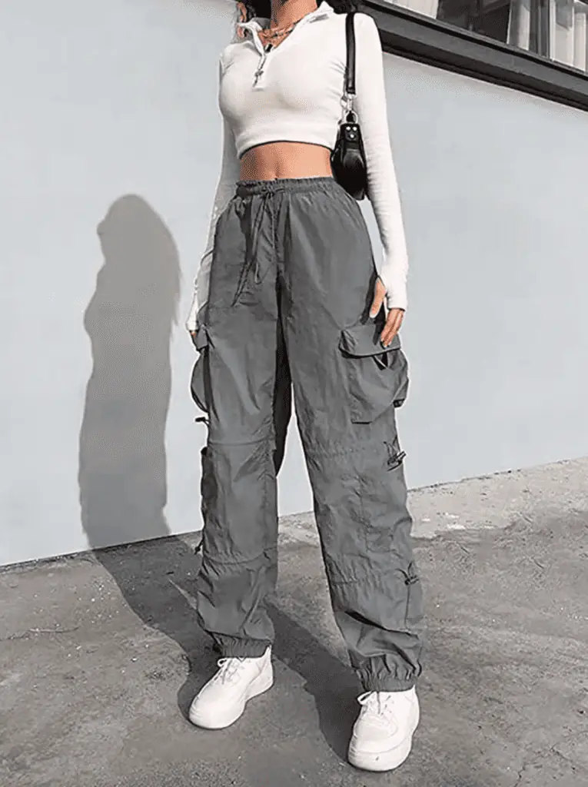
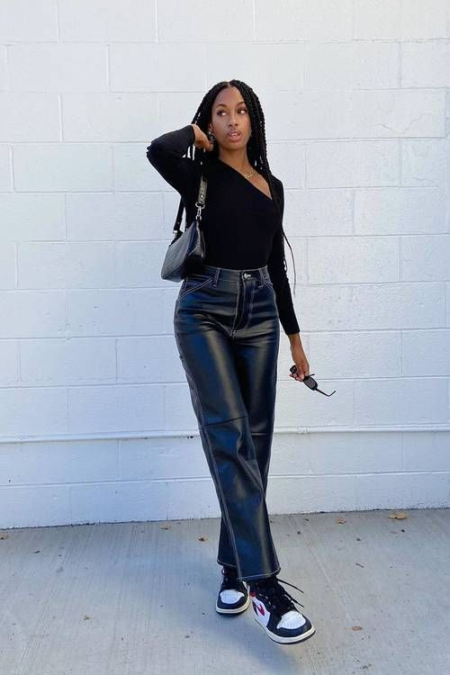

Sheer Layers
Cargo Pants
2022 marked a shift toward elevated basics and sustainable fashion. As the world transitioned back to in-person life post-pandemic, fashion embraced understated luxury and timeless silhouettes. Quiet luxury—think neutral tones, quality fabrics, and minimal branding—became a major focus. However, bold statements still had their place, with sheer layers offering a daring but elegant touch. Cargo pants also dominated casualwear, blending practicality with trendiness.
Quiet Luxury
Leather Everything